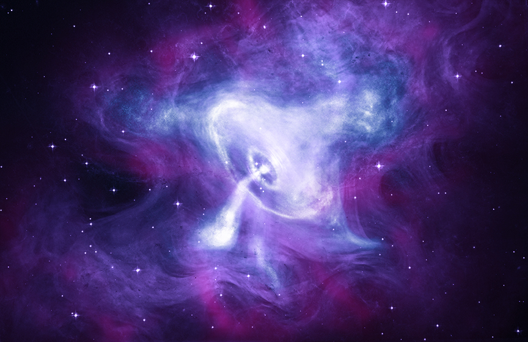

Selected Publications
Z. Ding, D. Milisavljevic, T. Martin, T. Temim,
J. C. Raymond, S. Mandal, and L. Drissen (2026).
3D Kinematic Reconstruction of the Crab Nebula that Includes
the Northern Ejecta “Jet”.
The Astrophysical Journal, 1007, 130.
[Paper]
[arXiv]
W. P. Blair, R. Sankrit, D. Milisavljevic, T. Temim,
J. M. Laming, P. Slane, Z. Ding, and
T. Martin (2026).
The Crab Nebula Revisited Using HST/WFC3.
The Astrophysical Journal, 997, 81.
[Paper]
[arXiv]
T. Martin, D. Milisavljevic, T. Temim, S. Mandal, P. Duffell,
L. Drissen, and Z. Ding (2025).
The non-uniform expansion of the Crab Nebula.
Monthly Notices of the Royal Astronomical Society,
544, 1–12.
[Paper]
[arXiv]
On the left is a youtube videos I made to show the 3d reconstrcution of the Crab Nebula.
Here is the link to the website that I built to display 3D reconstructions
of many different supernova remnants:
3D Supernova Remnant Reconstruction

The Time Domain Astronomy Research Group
I am part of the Time Domain Astronomy Research Group at Purdue University, run by Dr. Danny Milisavljevic.